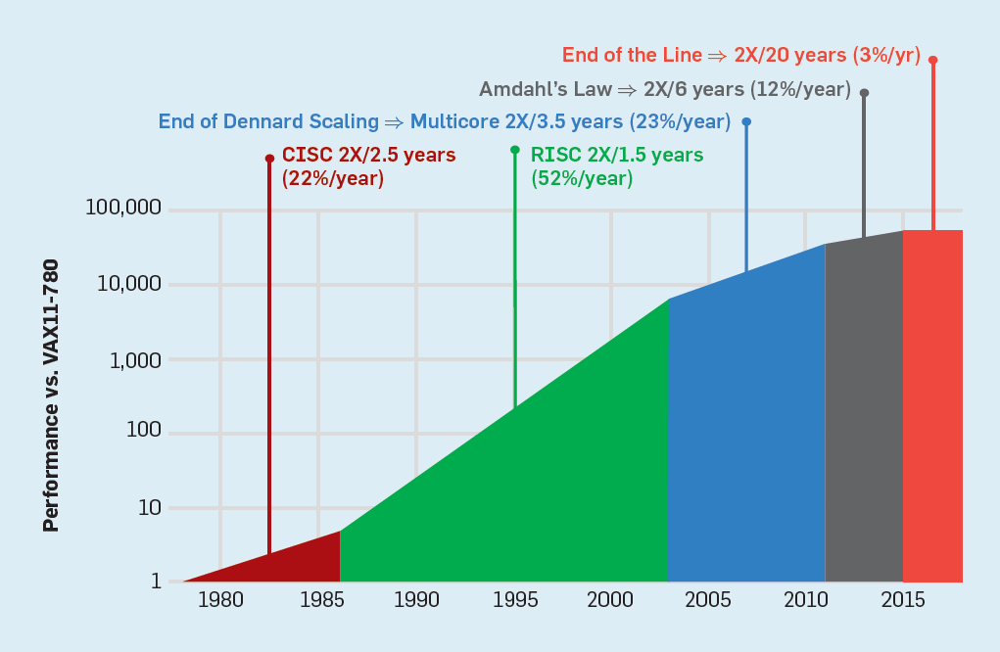

From CS and engineering to AI
Cloud (and hardware) native AI
@jjmerelo
13 x 13
What is artificial intelligence?
Fast tensor arithmetic
Done fast
A bit of TensorFlow: concat
if len(values) == 1:
with ops.name_scope(name) as scope:
ops.convert_to_tensor(
axis, name="concat_dim",
dtype=dtypes.int32).get_shape().assert_is_compatible_with(
tensor_shape.scalar())
return identity(values[0], name=scope)
return gen_array_ops.concat_v2(values=values, axis=axis, name=name)The law stops here
Improvements in
software architecture
hardware architecture
Through the use of free software
And hardware
From computer engineering to AI
Let's start at the edge
NVIDIA Edge Stack is an optimized software stack that includes NVIDIA drivers, a CUDA® Kubernetes plug-in, a CUDA Docker container runtime, CUDA-X libraries, and containerized AI frameworks and applications
Edge computing
Computing below the clouds
Edge ⇒ distributed, close and user-owned
High-performance processing for Internet of Things or anything else
Grove AI HAT
5G merges Internet of Things and edge computing
And fosters AI chips
AIS: AI-in-sensor
And is fostered by free software
... And hardware
Accelerating TensorFlow and Keras
By using open hardware cores
Processing tensors

By Zinskauf - Own work, CC
BY-SA 4.0, Link

RISC-V for the win

Kendryte K210, an AI accelerator
Or spiking neurons

By DARPA SyNAPSE - http://www.darpa.mil/NewsEvents/Releases/2014/08/07.aspx, Public Domain, Link
Side effect: less energy consumption
+ Less memory footprint, more speed
GPUs process vectors... fast
As fast as they consume energy
Field programmable gate arrays
Software-defined hardware
Open hardwaree
More bang for the buck
FPGAs want to be free
Taken from github.com/jofrfu/tinyTPU
Castillo, Pedro Angel, et al. "Evolutionary system for prediction and optimization of hardware architecture performance." 2008 IEEE Congress on Evolutionary Computation (IEEE World Congress on Computational Intelligence). IEEE, 2008.
Know the tools
Understand the concepts
Build your AI from the bottom
From computer science to AI
Cloud computing ⇒ Working with virtualized resources
Virtual machines, storage, data stores, message queues, logging, networks, data analysis, identity management...
The current technology for designing, building, testing and deploying applications
Mainframes → Desktop → Servers → Cloud
Artificial intelligence needs to change with that.
Everything starts with git
Infrastructure as code
From the simple...
az group create -l westeurope -n CCGroupEU
az vm create -g CCGroupEU -n bobot --image UbuntuLTS
... to the slightly more complex ...
{
"$schema": "https://schema.management.azure.com/schemas/2015-01-01/deploymentParameters.json#",
"contentVersion": "1.0.0.0",
"parameters": {
"location": { "value": "westeurope" },
"accountType": { "value": " Standard_LRS" },
"kind": { "value": "StorageV2" },
"accessTier": { "value": "Cool" },
"supportsHttpsTrafficOnly": { "value": true }
}
}... through the more abstract ..
Vagrant.configure("2") do |config|
config.vm.define 'public' do |public|
public.vm.box = "debian/stretch64"
public.vm.network "private_network", ip: "192.168.0.10"
end
config.vm.define 'db' do |db|
db.vm.box = "fnando/dev-xenial64"
db.vm.network "private_network", ip: "192.168.0.11"
end
end... to the nuts and bolts ...
- hosts: "{{target}}"
sudo: yes
tasks:
- name: install prerrequisites
command: apt-get update -y && apt-get upgrade -y
command: apt-get install aptitude python-apt -y
- name: install packages
apt: pkg={{ item}}
with_items:
- git
- curl
- build-essential
- libssl-dev
- nodejs
- npm
- name: Create links
command: ln -s /usr/bin/nodejs /usr/bin/node
ignore_errors: yes
- name: Create profile
copy: content="export PAPERTRAIL_PORT={{PAPERTRAIL_PORT}}; export PAPERTRAIL_HOST={{PAPERTRAIL_HOST}}" dest=/home/cloudy/.profile
... to the complex
FROM rabbitmq:latest
LABEL version="0.1" maintainer='jjmerelo@gmail.com'
RUN apt-get update && apt-get upgrade -y && apt-get install -y python3 python3-pip
RUN update-alternatives --install /usr/bin/python python /usr/bin/python3 1\
&& update-alternatives --install /usr/bin/pip pip /usr/bin/pip3 1
ADD requirements.txt ./
RUN pip3 install --no-cache-dir -r requirements.txt
WORKDIR /home/app
ADD create-user-rmq.sh cliente-con-celery.py PlatziAgenda.py PlatziTareas.py SlackComandos.py PlatziSlack.py ./
RUN mkdir data
ADD data/cursos.json data/cursos.json
CMD ./create-user-rmq.sh && celery -A PlatziTareas worker --loglevel=info & ./cliente-con-celery.py
Discrete releases ⇒ Continuous integration/deployments
Idempotent deployments
Avoiding works-for-me-ism
os:
- linux
services:
- docker
install:
- util/travis-build.sh
script:
- util/travis-test.sh
matrix:
include:
- env: BUILDENV=whateverable
- env: BUILDENV=dockerDevOps ⇒ Development + QA + Operations
New/old languages on the block
Go for insfrastructure
Full-stack Javascript
Orchestration of resources
Kubernetes definition
apiVersion: v1
kind: Pod
metadata:
name: twocontainers
spec:
containers:
- name: sise
image: mhausenblas/simpleservice:0.5.0
ports:
- containerPort: 9876
- name: shell
image: centos:7
command:
- "bin/bash"
- "-c"
- "sleep 10000"
To create event-based architectures
Via distributed configuration
To create a service mesh
That includes diverse levels of virtualization
And serverless computing
module.exports.hello = async (event, context) => {
return {
statusCode: 200,
body: JSON.stringify({
message: 'Expecto Petronum',
input: event,
}),
};
};Everything as a service
sub MAIN( $subscription-id, $token-json ) {
my $token = from-json( $token-json.IO.slurp )<access_token>;
my $ua = HTTP::UserAgent.new;
$ua.timeout = 10;
my $res = $ua.get( "https://management.azure.com/subscriptions/$subscription-id/locations?api-version=2016-06-01",
Authorization => "Bearer $token",
Content-Type => "application/json");
if $res.is-success { # stuff happens
} else {
say "Didn't work: $res";
}
}AI as a service
const uriBase =
"https://westcentralus.api.cognitive.microsoft.com/face/v1.0/detect"
const imageUrl =
"https://upload.wikimedia.org/wikipedia/commons/3/37/Dagestani_man_and_woman.jpg"
const params = "?returnFaceAttributes=age,gender,headPose,smile,facialHair," +
"glasses,emotion,hair,makeup,occlusion,accessories,blur,exposure,noise"
const uri = uriBase + params
const imageUrlEnc = "{\"url\":\"" + imageUrl + "\"}"
// .. later
req.Header.Add("Content-Type", "application/json")
req.Header.Add("Ocp-Apim-Subscription-Key", subscriptionKey)
resp, err := client.Do(req)
Your next applications will be born in the cloud
And we need to change software engineering methods to reflect that
Traditional architectures are monolitic
Modern, cloud native architectures are distributed
AI computing architectures need to be on the cloud
And based on microservices
Processing streams
Using kappa and other architectures

Image by Diddharth Mittal